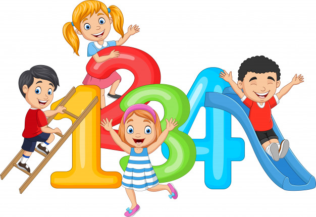

INGLÉS PARA PRINCIPIANTES // ENGLISH FOR BEGGINERS.
INICIO
¿Sabías que existen herramientas accesibles y fáciles de usar para aprender inglés?.
Esta es una de ellas, y tiene como objetivo principal ayudar a todos aquellos principiantes en la lengua en su proceso de enseñanza.
Con un poco de motivación y disciplina podrás mejorar tus habilidades comunicativas en la lengua inglés en un nivel básico (A1, A2 según el Marco Común Europeo).
LECCIONES
1. Los números del 1 al 100.
El tema de los números es de suma importancia en el aprendizaje del inglés, ya que se usa al hablar de la información personal: edad, números de teléfono, direcciones etc. También en contextos donde necesites hablar de precios o tallas de ropa como almacenes de ropa, restaurantes, cinemas, etc.

GRUPO 1:
Los números del 0 al 12. Se pronuncian igual en las formas del inglés americano y británico. Observa y escucha el siguiente video e intenta pronunciar los números después de que la persona los menciona.
Zero (0): Cero
One (1): Uno
Two (2): Dos
Three (3): Tres
Four (4): Cuatro
Five (5): Cinco
Six (6): Seis
Seven (7): Siete
Eight (8): Ocho
Nine (9): Nueve
Ten (10): Diez
Eleven (11): Once
Twelve (12): Doce
GRUPO 2:
Los números del 13 del al 19 se escriben con una terminación final –teen, donde la pronunciación del sonido /i/ es más largo que la i en español. Los números del 13 al 19 se pronuncian de la misma manera en las variantes americana y británica. En el siguiente video una maestra te enseñara la correcta pronunciación de los números del 13 al 19.
Thirteen (13): Trece
Fourteen (14): Catorce
Fifteen (15): Quince
Sixteen (16): Dieciséis
Seventeen (17): Diecisiete
Eighteen (18): Dieciocho
Nineteen (19): Diecinueve
GRUPO 3:
Los números del 20, 30, 40, … 90 se escriben con -ty final. escucha el siguiente video e intenta pronunciar los números después de que la persona los menciona.
Twenty (20): Veinte
Thirty (30): Treinta
Forty (40): Cuarenta
Fifty: (50): Cincuenta
Sixty: (60): Sesenta
Seventy (70): Setenta
Eighty (80): Ochenta
Ninety (90) : Noventa
GRUPO 4:
Los números combinados del 21 al 99 se escriben y pronuncian utilizando la decena (20, 30, etc.) y luego un número del 1 al 9. En el siguiente video te explicaremos más a detalle cómo es su pronunciación.
Ejemplos de su escritura:
Twenty-one (21): Veintiuno
Forty-five (45): Cuarenta y cinco
Sixty-seven (67): Sesenta y siete
Seventy-eight (78): Setenta y ocho
Ninety-nine (99): Noventa y nueve
One hundred (100): Cien
2. Los colores.
Al terminar esta lección, sabrás todo todo lo que necesitas saber sobre los colores en inglés: su significado en español, su pronunciación, escritura, vocabulario relacionado con los colores.
Red = Rojo
Blue = Azul
Light blue = Azul claro
Sky blue = Azul cielo
Dark blue = Azul oscuro
Yellow = Amarillo
Green = Verde
Light green = Verde claro
Turquoise = Turquesa
Orange = Naranja
Violet = Violeta
White = Blanco
Black = Negro
Gray = Gris
Pink = Rosa
Fuchsia = Fucsia
Brown = Marrón
Purple = Morado
3. Saludos y despedidas.
En esta lección aprenderás a utilizar de forma adecuada los saludos y despedidas en inglés. Este tema también se conoce como Greetings and Farewells. Haremos énfasis en la pronunciación. Aprender la pronunciación correcta de los saludos y las despedidas te ayudará a sentirte más cómodo o cómoda hablando inglés. Existen saludos formales y saludos informales, en la siguiente imagen te indicaremos cuales son.
SALUDOS FORMALES EN INGLÉS:
SALUDOS INFORMALES EN INGLÉS:
DESPEDIDAS FORMALES EN INGLÉS
DESPEDIDAS INFORMALES EN INGLÉS
En el siguiente video profundizaras más en la pronunciación de los saludos y despedidas:
4. Tiempo Presente del Verbo To Be:
Este verbo es una palabra que en presente tiene dos significados SER y ESTAR. Esto causa algunos problemas a los hablantes del español que desean aprender inglés. Para ejemplificar sus dos 2 significados observa los siguientes ejemplos:
Ejemplo 1:
I am from Canada / Soy de Canadá
Ejemplo 2:
I am in Canada / Estoy en Canadá
ESTRUCTURA DEL VERBO TO BE
Usos del verbo To Be en inglés:
1. Origen:
I am from Colombia: Soy de Colombia
She is not from Peru: Ella no es de Perú
2. Adjetivos que describen a personas u objetos:
The car is red: El carro es rojo
They are not shy / Ellos no son tímidos
3. Ubicación:
Is she at home?: ¿Está ella en casa?
We are in the classroom : Estamos en el salón.
4. Estados:
She is not afraid: Ella no está asustada
The window is broken: La ventana está rota
5. Usos especiales:
En español para referirnos a la edad utilizamos el verbo “ tener” como en “ yo tengo 20 años”. Por otro lado, en inglés para referirnos al edad no lo hacemos con el verbo “ tener” sino con el verbo “TO BE”.
Ejemplo:
She is 20 years old : Ella tiene 20 años.
Para profundizar más en el tema, observa el siguiente video:
5. Los artículos:
En esta lección vamos a aprender sobre el artículo indefinido A y AN en inglés. Este tema también es conocido como Definite Article.
¿Qué es el artículo indefinido A y AN en inglés?
Es una palabra que se refiere a algo que no es específico. Observa el siguiente ejemplo:
I need a pencil / Necesito un lápiz
En esta oración alguien necesita UN lápiz. No un lápiz en específico, más bien cualquier lápiz en el mundo.
Significado de A y AN
El significado de estas palabras en español es el mismo: UN o UNA. Debemos usar estas palabras en singular únicamente. Asimismo, el significado de este artículo no es UNOS o UNAS. Ejemplos:
She has a bicycle: Ella tiene una bicicleta
She has a brother: Ella tiene un hermano
En la siguiente imagen te mostraremos las reglas para usar estos respectivos artículos:
Para profundizar en el tema, observa el siguiente video:
6. La Hora:
¿Cómo preguntar la hora en inglés?
What time is it?: ¿Qué hora es?
What’s the time?: ¿Qué hora es?
Aunque estas dos formas son diferentes, las dos significan lo mismo.
También en caso de preguntar la hora en una situación formal o a alguien que no conocemos, podríamos utilizar:
Could you tell me what time it is, please? / ¿Me podría por favor decir qué hora es?
¿Cómo decir la hora en inglés?
Existen varias formas de decir la hora. Todas las formas son acertadas y adecuadas en todos los contextos.
En inglés utilizamos el pronombre it para decir la hora. A pesar de que en español no usamos un pronombre para decir la hora (por ejemplo: son las 3 de la tarde), en inglés es necesario usar it.
ejemplos:
It is 5 p.m. : Son las 5 PM – de la tarde
It is 1:10 p.m. : Es la 1:10 PM – de la tarde
It is 4:25 a.m. : Son las 4:25 AM – de la mañana
It is 2 a.m. : Son las 2 AM – de la mañana
It is 11:15 : Son las 11:15
It is 7 o’clock : Son las 7 en punto
En español al hablar de la hora no decimos PM o AM, en inglés sí. Entonces, si quieres decir 4 de la tarde o 3 de la mañana en inglés, debes usar AM para decir de la mañana y PM para decir de la tarde.
Existen otras formas para decir la hora utilizando palabras como un cuarto (a quarter) y media (half).
It is 5:15 (It is a quarter past 5) : Son las 5 y cuarto
It is 11:30 (It is half past 11) : Son las 11 y media – Media hora pasadas las 11
Recuerda que en la palabra HALF la L es muda; por tanto, se pronuncia /haf/.
También podemos utilizar la palabra past (pasadas o después de), en donde primero decimos los minutos y luego la hora.
2:15 (fifteen past two) : 15 minutos pasadas o después de las 2
11:25 (twenty-five past eleven) : 25 minutos pasadas o después de las 2
En ambos casos también podemos usar la forma simple para decir la hora: 2:15 (It’s two fifteen) y 11:25 (It’s eleven twenty-five).
También podemos utilizar la palabra to para significar que faltan tantos minutos para tal hora.
Ejemplos:
5:40 (twenty to six): 6 menos 20 o faltan 20 para las 6
10:45 (a quarter to eleven): 11 menos cuarto o faltan 15 para las 11
7. VOCABULARIO BASICO
Con esta lección de vocabulario de inglés cerramos el curso básico de inglés. Se trata de vocabulario básico en inglés que será muy útil para repasar muchas de las palabras vistas hasta ahora, así como para aprender nuevas palabras y ampliar tu vocabulario en inglés.
DIAS DE LA SEMANA *audio días de la semana*
Español / Inglés
Días de la semana / Days of the week
Lunes / Monday
Martes / Tuesday
Miércoles / Wednesday
Jueves / Thursday
Viernes / Friday
Sábado / Saturday
Domingo / Sunday
MESES DEL AÑO *Audio meses del año*
Español / Inglés
Meses del año / Months of the year
Enero / January
Febrero / Febrery
Marzo / March
Abril / April
Mayo / May
Junio / June
Julio / July
Agosto / August
Septiembre / September
Octubre / October
Noviembre / November
Diciembre / December
VERBOS *Audio verbos*
Español Inglés
ser / estar be
hacer / do
hacer(fabricar) / make
tener / have
andar,pasear / walk
correr / run
leer / read
escribir / write
dormir / sleep
soñar / dream
ir / go
venir / come
buscar / search
encontrar / find
LUGARES EN LA CIUDAD *audio ciudad*
Español Inglés
ciudad / city
escuela, colegio / school
banco / bank
parque / park
calle / street
tienda / shop
iglesia / church
biblioteca / library
grandes almacenes / department stores
mercado / market
PARTES DE LA CASA *Audio casa*
Español Inglés
hogar / home
casa / house
apartamento, apartment / flat
jardín / garden
cocina / kitchen
comedor / dining room
dormitorio / bed room
sala de estar / living room
puerta / door
ventana / window
¿Quiénes Somos?
Esta página web es una propuesta educativa diseñada por Laura Sofía Rodriguez, estudiante del programa académico Licenciatura en Educación Básica con énfasis en Ingles de la Universidad Distrital Francisco José de Caldas en Bogotá Colombia.
Estamos enfocados en todos aquellos principiantes en el aprendizaje de la lengua inglés como Segunda Lengua o como Lengua Extranjera, y esperamos que, con su contenido, quienes lo usen puedan avanzar a un Nivel Intermedio mucho más rápido, brindándoles las herramientas necesarias para hacer su aprendizaje más accesible y dinamico.
¡Espero que lo disfrutes, y que nunca dejes de aprender!